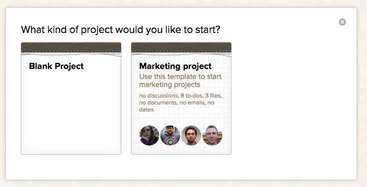

A Basecamp project is a workspace where you collaborate with your team and collect your discussions, to-dos, documents and files all in one place.
Projects can be used for anything from building a new app, to serving as a company watercooler, to organizing a family vacation. Here's how to use them!
Click the “New Project” button: It's located on the left side of your projects screen. Only administrators, the account owner and people given permission to create a project will see the "New Project" button.
Pick a template or a blank project: If you've created templates, you can start a project using one of them. For now, we'll pick a blank project.

Name it! Give the project a name, and add your team. Start typing the names of the folks you'll be working with. Use companies and groups to add people quickly. Enable the client access to keep items off limits from your clients.
Now you're ready to work!
Start a discussion: Fill people in on project details and get their feedback.
Make a To-do list: Create tasks, and assign them to people. Dated to-dos will appear on your Calendar.
Share documents and images: Upload files to the "Files" page. You can attach files to comments as well.
Use a Text Document Share your notes and ideas. Your team can edit text docs collaboratively.
Have an upcoming event or deadline? Add it to the Dates page. When you do, you'll see it on your Calendar. Create single-day events or events that span multiple days.
Want to see some examples of finished projects? Check out the Public Projects page!